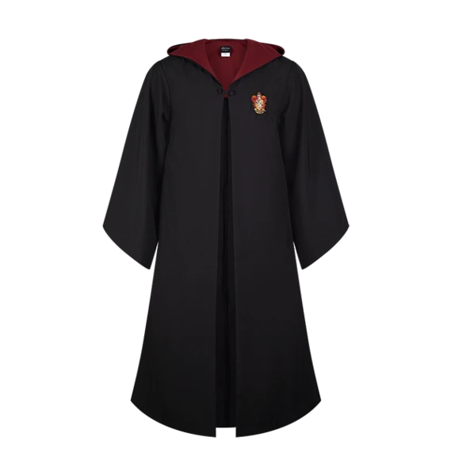

Souvenirs
Add a touch of the wizarding world to your collection with an exceptionally ordinary selection of unique Harry Potter souvenirs. The range includes exclusive pins, bespoke bookmarks, keyrings and more, the perfect addition to any Harry Potter fan’s collection.
|  | ||
Harry Potter's Wooden Wand |
Personalised Gryffindor Robe |
Gryffindor Reversible Knit Scarf |
£60.00 |
£75.00 |
£24.00 |
Description for itemOne of the most famous wizards of all time, Harry Potter learnt on his 11th birthday that he was destined to attend Hogwarts School of Witchcraft and Wizardry. Harry acquired his powerful wand at Ollivanders shop in Diagon Alley which was made with unique holly wood with a phoenix feather core. |
Description for itemCelebrate your Hogwarts house pride with this replica Gryffindor robe, as seen in the Harry Potter film series. The Gryffindor robe features contrasting scarlet lining, pockets (there's even a hidden pocket for your wand!), and embroidered Gryffindor crest. |
Description for itemCelebrate house pride and wrap up warm with this bespoke reversible Gryffindor scarf. The scarf features traditional house colours, burgundy on one side with yellow text and on the reverse, a yellow background with burgundy text. |
 |
||
Faux Leather Slytherin Crest Notebook |
Slytherin Gift Trunk |
Ravenclaw Crest Metal Ornament |
£15.00 |
£175.00 |
£15.00 |
Description for itemAny proud Slytherin would be pleased to have this vintage look faux-leather notebook in their home study! This emerald green journal features an impressive metal Slytherin house crest on the front cover, and silver foiled detailing near the border's edge. |
Description for itemCelebrate your house pride with this bespoke Slytherin Gift Trunk, perfect for Harry Potter fans to add to their collection. This trunk has been specially designed to resemble the trunk that students would take on their travels on the Hogwarts Express. Explore the exclusive souvenirs and unique collectables, the ultimate gift experience for every aspiring witch or wizard. |
Description for itemThis metal ornament features a brightly coloured Ravenclaw Crest; perfect for showing your house pride this Christmas! |
Ravenclaw House Mug |
Hufflepuff Broad Stripe Scarf |
Hufflepuff Essentials Backpack Set |
£12.95 |
£27.95 |
£50.95 |
Description for itemCelebrate your house pride and take a sip out of this bespoke Ravenclaw mug. The ceramic mug has been designed with various shades of blue, representing the traditional colour of the Ravenclaw house. The mug features a sculpted blue eagle across the front, the iconic logo of the house, with the word ‘Ravenclaw’ in a scroll along the bottom. |
Description for itemThis scarf features the Hufflepuff house crest colours in a broad stripe pattern. It measures approximately 164cm long, and 21cm wide. The tassels add approximately 12cm extra to the end of the scarf. |
Description for itemWhat better way to express your Hogwarts house pride than with these specially curated Essentials Backpack Sets? This backpack contains everything a loyal Hufflepuff could need with a selection of best-loved souvenirs, stationery, sweets, and collectibles, all with a unique Hufflepuff theme. |